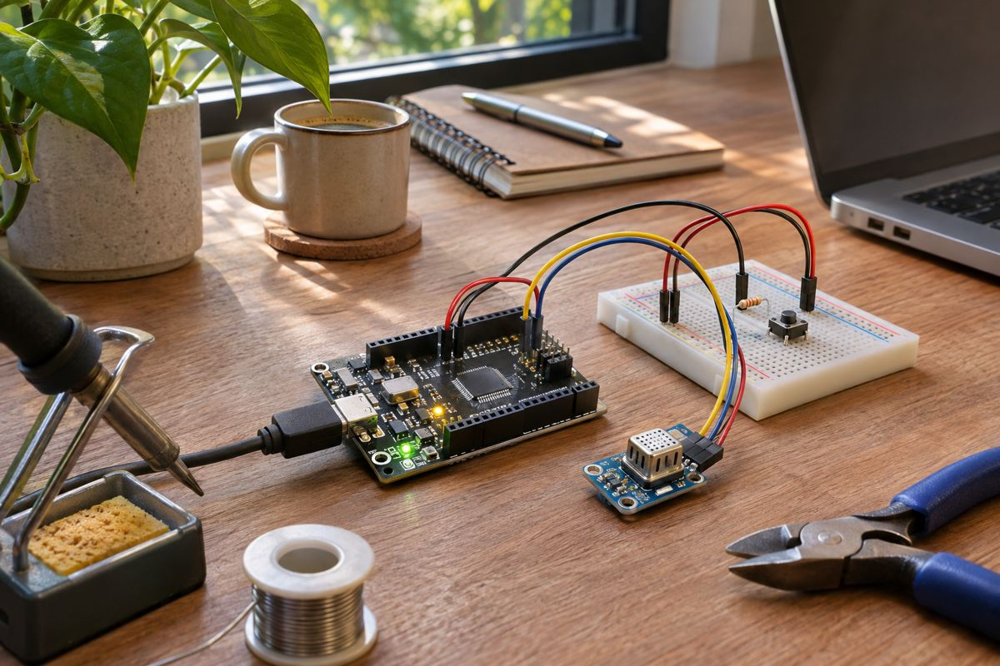

전자기기 / EXPLAINED
르네사스 Xplore, 개발 보드와 소프트웨어를 한곳에…12달러급부터 시제품 지원
RA 마이크로컨트롤러 평가와 기능 조합을 Renesas 365 안에서 이어 간다.

르네사스가 11월 10일 Xplore Developer Hub를 Renesas 365에 통합해 제공한다고 발표했다. RA 마이크로컨트롤러 개발 보드와 확장 모듈, 응용 소프트웨어를 같은 클라우드 개발 환경에서 선택하고 시험하는 방식이다. 회사는 보드 가격이 최저 약 12달러 수준에서 시작한다고 안내한다. 이는 완성된 전자제품 한 대의 제작비가 아니라 개발 보드의 진입 가격이며, 모듈과 배송 등 전체 비용과는 다르다.
르네사스는 기기 내부에서 제어와 신호 처리, 연결을 담당하는 반도체를 공급하는 기업이다. RA는 그 마이크로컨트롤러 계열 중 하나다. 마이크로컨트롤러 MCU는 센서 값을 읽고 모터나 조명을 제어하는 작은 컴퓨터 역할을 한다. 일반 노트북처럼 다양한 프로그램을 실행하는 용도보다는 정해진 기능을 기기 안에서 수행하는 경우가 많다. 개발 보드는 칩과 전원·연결 단자를 갖춰 처음부터 회로를 설계하기 전에 기능을 시험하도록 돕는다.
이번 변화는 부품 목록을 검색하는 단계와 실제 작동하는 시제품을 만드는 단계를 연결한다는 데 있다. 회사 설명에 따르면 개발자는 RA 보드를 고르고 아날로그·전원·통신 모듈을 더한 뒤, 같은 환경에서 응용 기능을 조합할 수 있다. Renesas 365는 Altium 기술을 기반으로 한 전자 시스템 개발 플랫폼으로, 웹 브라우저를 통해 접근한다. 하드웨어와 문서, 소프트웨어가 흩어져 있어 생기는 이동을 줄이려는 구상이다.
Hub는 응용 목적에 맞춘 소프트웨어 구성 요소를 100개 넘게 제공한다. 회사가 예로 든 NFC와 BLE 기능은 자산 추적기, 스마트 잠금장치나 가전 등 다른 제품에서도 재사용할 수 있다. NFC는 가까운 거리에서 정보를 교환하는 통신이고, BLE는 저전력 블루투스 방식이다. 다만 구성 요소 수가 완성 제품 수를 뜻하지는 않는다. 조합한 기능이 자신의 센서와 전원, 통신 조건에서 함께 작동하는지는 여전히 검증해야 한다.
예제와 실제 제품 사이
검증된 소프트웨어 모듈이 있다고 해서 양산 제품의 인증과 안전 시험까지 끝난 것은 아니다. 배터리로 쓰는 기기라면 소비전력과 대기 시간, 무선 제품이라면 실제 설치 환경에서의 연결을 확인해야 한다. 핀 배치나 전압이 맞지 않는 모듈을 이름만 보고 연결할 수도 없다. 개발 플랫폼이 반복 작업을 줄이는 역할과 최종 설계의 책임은 구분된다. 이는 플랫폼을 직접 사용해 얻은 성능 평가가 아니라 개발 과정에서 필요한 일반적 판단 기준이다.
지금 제공되는 범위는 신규·기존 RA 사용자용 Hub다. 다른 MCU·MPU 계열과 추가 확장 모듈, AI 안내 개발 흐름은 앞으로 지원을 더하겠다고 밝혔다. 따라서 모든 르네사스 칩이 현재 같은 방식으로 연결된다고 볼 수 없다. 11월 10~13일 뮌헨 electronica 시연 일정 역시 서비스의 현재 지원 범위와 미래 확장 약속을 대신하지 않는다. 구체적인 추가 지원 날짜는 이번 자료에 없다.
편집부의 해석으로는 가격이 낮은 보드 자체보다 부품 선택에서 코드와 평가까지 이어지는 경로가 정리되는 데 의미가 있다. 개인 개발자와 소규모 팀은 구매할 부품, 필요한 기능과 문서를 한곳에서 비교할 여지가 생긴다. 다만 보드 재고와 지역별 판매가, 계정 및 이용 조건은 별도로 확인할 사항이다. 발표일 현재 이용 가능하다는 설명과 특정 국가에서 즉시 배송된다는 보장은 같은 말이 아니다.